EDITOR COMMANDS
Most editing commands are available in the menu, but definitely key-bindings and Mouse actions are the most effective way to build and arrange schematics, so you should learn at least the most important ones.
INTUITIVE INTERFACE
This is a recent interface that uses less keyboard commands and more mouse actions
It is therefore possible to click and drag objects directly and do many more actions
by just using mouse actions. This interface is enabled by enabling the menu checkbutton:
Options -> Intuitive click & Drag Interface
Or by adding the following line:
set intuitive_interface 1
in your xschemrc file.
The following cheatsheet image shows the intuitive_interface commands
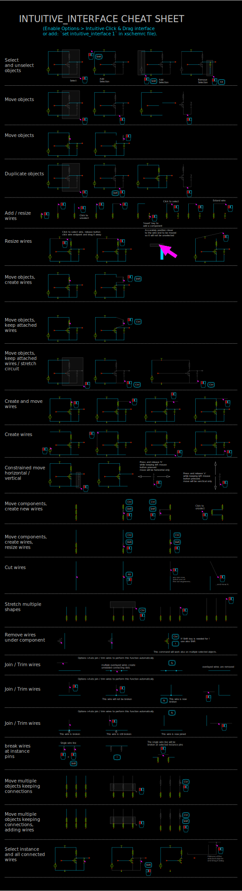The standard interface is described below. All below description applies also if intuitive_interface is enabled.
STANDARD INTERFACE
The basic principle in XSCHEM is that first you select something in the circuit then you decide what to do with the selection. For example, if you need to change an object property you first select it (mouse click) and then you press the edit property ('q') key. It you need to move together multiple objects you select them (by area or using multiple mouse clicks with the Shift key), then you press the move ('m') key.
EDITOR COMMAND CHEATSHEET
This list is available in XSCHEM in the Help menu
XSCHEM MOUSE BINDINGS
----------------------------------------------------------------------
LeftButton Clear selection and select a graphic object
(line, rectangle, symbol, wire)
if clicking on blank area: clear selection
shift + LeftButton Select without clearing previous selection
ctrl + LeftButton if an 'url' or 'tclcommand' property is defined on
selected instance open the url or execute the
tclcommand
LeftButton drag Select objects by area, clearing previous selection
"[shift] left button drag" and "[shift] ctrl-left
button drag" commands are swapped if enable_stretch
is set.
Ctrl + LeftButton drag Select objects by area to perform a
subsequent 'stretch' move operation
shift + LeftButton drag Select objects by area, without clearing
previous selection
Shift + Select objects by area without unselecting
Ctrl + LeftButton drag to perform a subsequent 'stretch' move operation
Shift + RightButton Select all connected wires/labels/pins
Ctrl + RightButton Select all connected wires/labels/pins, stopping at
wire junctions
Alt + RightButton Cut wire at mouse position (creates 2 adjacent wires)
aligns the cut point to current snap setting.
Alt + Shift + RightButton
Cut wire at mouse position (creates 2 adjacent wires)
does not align cut point to current snap setting.
Mouse Wheel Zoom in / out
MidButton drag Pan viewable area
Alt + LeftButton Unselect selected object
Alt + LeftButton drag
Unselect objects by area
RightButton drag Zoom area
RightButton Release Context menu
LeftButton Double click Terminate Polygon placement
Edit object attributes
XSCHEM KEY BINDINGS
----------------------------------------------------------------------
- BackSpace Back to parent schematic
- Delete Delete selected objects
- Insert Insert element from library
shift Insert Open persistent insert symbol dialog box
- Print Scrn Grab screen area
- Escape Abort, redraw, unselect
ctrl Enter Confirm closing dialog boxes
- Down Move down
- Left Move right
- Right Move left
- Up Move up
ctrl Left Previous tab (if tabbed interface enabled)
ctrl Right Next tab (if tabbed interface enabled)
- ':' Toggle flat netlist
- '\' Toggle fullscreen
- '!' Break selected wires at any wire or component pin
connection
shift '<' Show all layers
shift '>' Show only current set layer
- '/' Show fullscreen image of bindkeys
- ' ' Pan schematic
- ' ' When drawing lines or wires toggle between
manhattan H-V, manhattan V-H or oblique path.
- '#' Highlight components with duplicated name (refdes)
ctrl '#' Rename components with duplicated name (refdes)
- '5' View only probes
ctrl '0-9' set current layer (0-9)
'0' set selected net or label to logic value '0'
'1' set selected net or label to logic value '1'
'2' set selected net or label to logic value 'X'
'3' set selected net or label to logic value 'Z'
'4' toggle selected net or label: 1->0, 0->1, X->X
- 'a' Make symbol from pin list of current schematic
ctrl 'a' Select all
shift 'A' Toggle show netlist
- 'b' Merge file
Shift 'B' Edit/add header/license metadata to the schematic/symbol file.
ctrl 'b' Toggle show text in symbol
alt 'b' Toggle show symbol details / only bounding boxes
- 'c' Copy selected objects, 'c' and 'alt-c' commands are swapped if enable_stretch is set
Alt 'c' Copy selected objects, insert wires when separating touching instance pins/wires
ctrl 'c' Save to clipboard
shift 'C' Start arc placement
shift+ctrl 'C' Start circle placement
ctrl 'd' Delete files
- 'd' Unselect selected object under the mouse pointer
shift 'D' Unselect selected objects by area
ctrl 'e' Back to parent schematic
- 'e' Descend to schematic
alt+shift 'E' Edit selected schematic in a new window, new xschem process
alt 'e' Edit selected schematic in a new window
'\' Toggle Full screen
shift 'F' Horizontal flip selected objects
alt 'f' Horizontal flip selected objects around their anchor points
ctrl 'f' Find/select by substring or regexp
- 'f' Full zoom
shift+ctrl 'F' Zoom full selected elements
shift 'G' Double snap factor
- 'g' Half snap factor
ctrl 'g' Set snap factor
alt 'g' Hilight selected nets and send to gaw waveform viewer
- 'h' Constrained horizontal move/copy of objects
alt 'h' create symbol pins from schematic pins
ctrl 'h' Follow http link or execute command (url, tclcommand properties)
shift 'H' Attach net labels to selected instance
ctrl+shift 'H' Make schematic and symbol from selected components
- 'i' Descend to symbol
ctrl 'i' Open persistent insert symbol dialog box
shift 'I' Insert symbol
alt 'i' Edit selected symbol in a new window
alt+shift 'J' Create labels with 'i' prefix from highlighted nets/pins
alt 'j' Create labels without 'i' prefix from highlighted nets/pins
ctrl 'j' Create ports from highlight nets
alt+ctrl 'j' Print list of highlighted nets/pins with label expansion
- 'j' Print list of highlighted nets/pins
- 'k' Hilight selected nets
ctrl+shift 'K' highlight net passing through elements with 'propag' property set on pins
shift 'K' Unhilight all nets
ctrl 'k' Unhilight selected nets
alt 'k' Select all nets attached to selected wire / label / pin.
- 'l' Start line
shift 'L' Toggle orthogonal routing (automatic H-V or V-H)
ctrl 'l' Make schematic view from selected symbol
alt+shift 'l' add lab_wire.sym to schematic
alt 'l' add lab_pin.sym to schematic
ctrl+shift 'o' Load most recent schematic
ctrl 'o' Load schematic
- 'm' Move selected objects. 'm' and 'ctrl-m' commands are swapped if enable_stretch is set
ctrl 'm' Move selected objects, stretching wires attached to them
Alt 'm' Move selected objects, insert wires when separating touching instance pins/wires
shift 'M' Move selected objects, insert wires when separating touching instance pins/wires
ctrl+shift 'M' Move selected objects, combine Shift-M and Ctrl-m
shift 'N' Top level only netlist
- 'n' Hierarchical Netlist
ctrl 'n' Clear schematic
ctrl+shift 'N' Clear symbol
shift 'O' Toggle Light / Dark colorscheme
shift+ctrl 'O' Load most recent file
ctrl 'o' Open file
- 'p' Place polygon. Operation ends by placing last point over first.
alt 'p' Add symbol pin
ctrl 'p' Add schematic ipin
ctrl+shift 'P' Add schematic opin
shift 'P' Pan view area
alt 'q' Edit schematic file (dangerous!)
- 'q' Edit prop
shift 'Q' Edit prop with vim
ctrl+shift 'Q' View prop
ctrl 'q' Exit XSCHEM
alt 'r' Rotate objects around their anchor points
shift 'R' Rotate
- 'r' Start rect
shift 'S' Change element order
ctrl+shift 'S' Save as schematic
- 's' run simulation (asks confirmation)
ctrl 's' Save schematic
alt 's' Reload current schematic from disk
ctrl+alt 's' Save-as symbol
- 't' Place text
shift 'T' Toggle *_ignore flag on selected instances
alt 'u' Align to current grid selected objects
ctrl 'u' Unselect attached floater objects
shift 'U' Redo
- 'u' Undo
- 'v' Constrained vertical move/copy of objects
shift 'V' Vertical flip selected objects
alt 'v' Vertical flip selected objects around their anchor point
ctrl 'v' Paste from clipboard
ctrl+shift 'V' Toggle spice/vhdl/verilog netlist
- 'w' Place wire
ctrl 'w' close current schematic
shift 'W' Place wire, snapping to closest pin or net endpoint
ctrl 'x' Cut into clipboard
- 'x' New cad session
shift 'X' Highlight discrepancies between object ports and attached nets
ctrl+shift 'X' create xplot plot file for ngspice in simulation directory
(just type xplot in ngspice)
alt 'x' Toggle draw crosshair at mouse position
- 'y' Toggle stretching wires
- 'z' Zoom box
shift 'Z' Zoom in
ctrl 'z' Zoom out
- '?' Help
- '&' Join / break / collapse wires
shift '*' Postscript/pdf print
ctr+shift '*' Xpm/png print
alt+shift '*' Svg print
ctrl '-' Decrease line width
alt '-' Set line width
ctrl '+' Increase line width
- '_' Toggle change line width
- '%' Toggle draw grid
ctrl '=' Toggle fill rectangles
- '$' Toggle pixmap saving
ctrl '$' Toggle use XCopyArea vs drawing primitives for drawing the screen
KEYBIND CUSTOMIZATION
changes to default keybindings may be placed in the ~/.xschem/xschemrc file as in the following examples:
## replace Ctrl-d with Escape (so you won't kill the program :-)) set replace_key(Control-d) Escape ## swap w and W keybinds; Always specify Shift for capital letters set replace_key(Shift-W) w set replace_key(w) Shift-W
SELECT OBJECTS
Objects can be selected by clicking the left mouse button when the pointer is very close to the object.
For rectangle objects the best point to select it is the internal side, close to one of the corners.
More objects can be selected by pressing the Shift key and clicking another object.
Once objects are selected they can be copied (c key), moved (m key), deleted
(Delete key) or attributes changed (q key).
Objects can also be selected by area, by dragging with the left mouse button pressed a rectangle around the objects
you want to select.
RESIZE OBJECTS
All Xschem base objects can be resized. For lines, rectangles, polygons you need to drag the mouse with left button pressed and Ctrl key pressed over one vertex/endpoint.
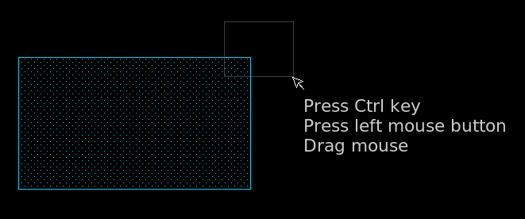After releasing the mouse button the object will become selected and a subsequent move operation (m key) will move the selected vertex/endpoint.
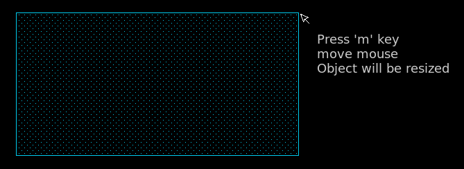More objects can be resized. You can add vertex/endpoints by pressing Ctrl and Shift and dragging the mouse to enclose another vertex/endpoint. After selecting all desired elements pressing the m key will resize all objects.
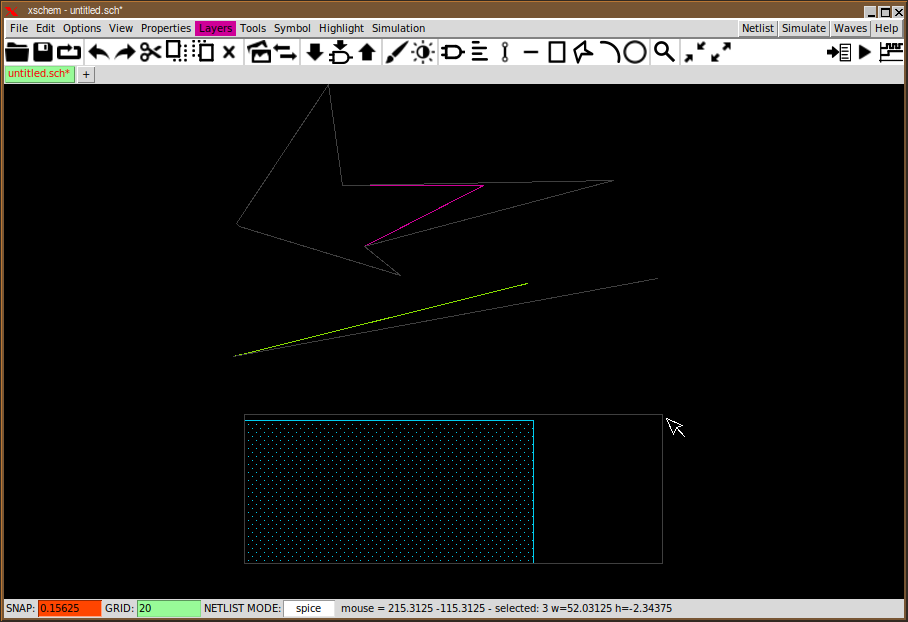Circles can be resized as well. Capture the center of the circle with the above described mouse drag operation, the radius can be changed. For arcs you can capture the center (to modify the radius) or the endpoints to change the start/end angle or the arc angle.
STRETCH OPERATIONS
An important operation that deserves a special paragraph is the Stretch operation. There is frequently the need to move part of the circuit without breaking connections, for example to create more room for other circuitry or just to make it look better. The first thing to do is to drag a selection rectangle with the mouse holding down the Ctrl key, cutting wires we need to stretch:
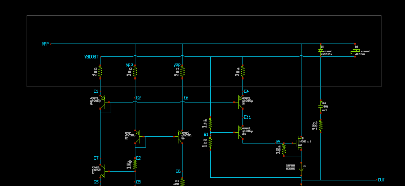After selection is done hit the move ('m') key. You will be able to move the selected part of the schematic keeping connected the wires crossing the selection rectangle:
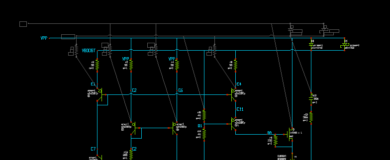In our example we needed to move up part of the circuit, the end result is shown in next picture. Multiple stretch rectangles can be set using the Shift key in addition to the Ctrl key after setting the first stretch area.
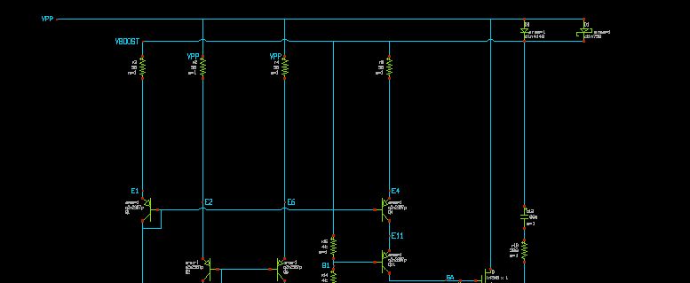Another way to move objects stretching attached wires is to press Ctrl-m instead of m This way you don't have to remember to press Ctrl when doing the selection.
Pressing Shift-m instead of m will create new wires while moving the selected objects.
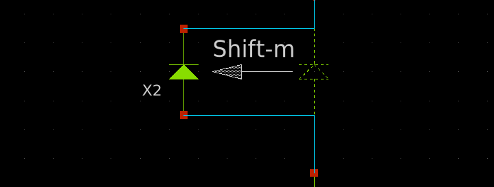PLACE, WIRES MANHATTAN PATHS
When you press the w key a wire placement begins. Moving the mouse a rubber wire is displayed. Clicking the left mouse button will end the wire placement. If the space bar is pressed you toggle between Horizontal-Vertical, Vertical-Horizontal and oblique placement mode.
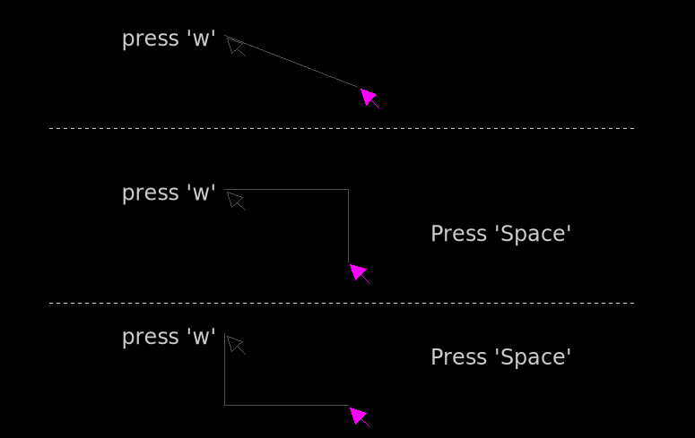PLACE WIRES SNAPPING TO CLOSEST PIN OR NET ENDPOINT
The (uppercase) 'W' bindkey allows to place a wire putting start (and end point, later) to the closest pin or wire endpoint, this will make it easier to connect precisely without the need to zoom in all times.
CONSTRAINED MOVE
while creating wires, lines, and moving, stretching, copying objects, pressing the 'h' or 'v' keys will constrain the movement to a horizontal or vertical direction, respectively.
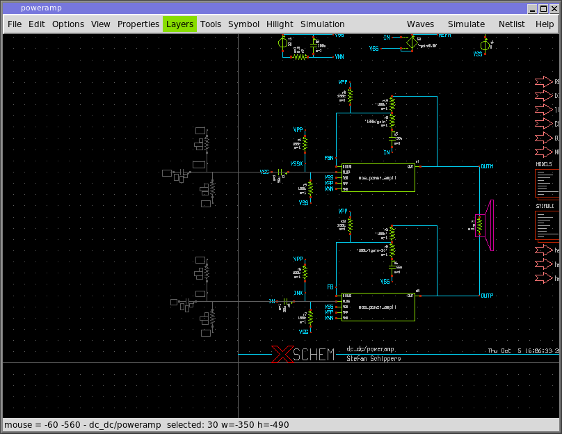Constrained horizontal move: regardless of the mouse pointer Y position movement occurs on the X direction only.
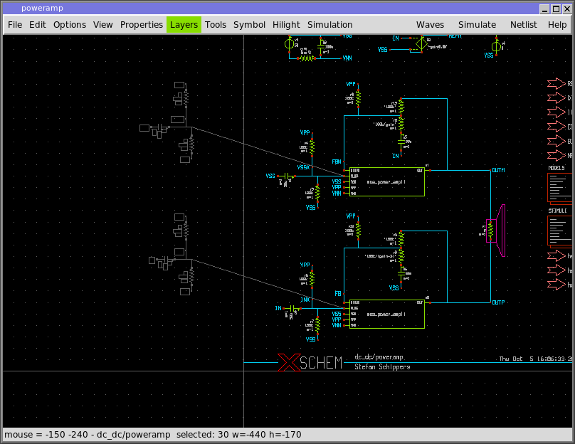Unconstrained move: objects follow the mouse pointer in X and Y direction.
POLYGON EDITING COMMANDS
There are some specific editing modes for polygons. A polygon is created by pressing the p key.
After dragging the first segment a mouse button clock will create the second point and so on.
A double click ends the placement.
If a polygon is selected the control points are shown with circles. These circles can be dragged with the
mouse directly.
Clicking one control point with the Shift key will add a new point in the polygon shape:
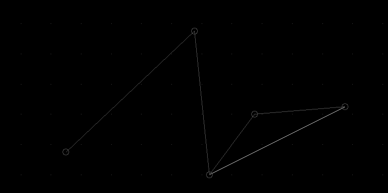Clicking one control point with the Ctrl key will delete a point in the polygon shape.
Adding attribute bezier=true or bezier=1 will transform the polygon into a bezier curve with the polygon points acting as control points.